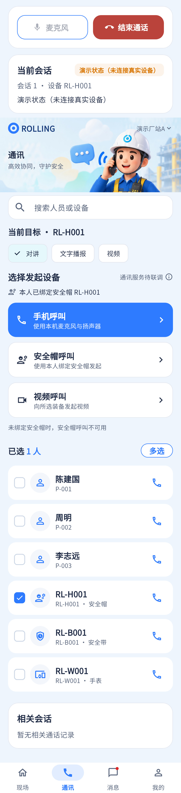

语音通话代码已接RTC，但扬声器切换、计时、参与人员面板缺失，真接通未在本次验收。
相同 · 已有基础
会话状态、麦克风静音、结束通话以及未连真实设备的示例提示已有。
不同 · UI与场景
设计为聚焦通话画板；当前在通讯长页顶部插入控制条和会话卡，仍显示联系人及底栏。
01 / 先看 UI
两图显示宽度统一；设计390px与当前360逻辑宽的画布不同。各图可独立滚动到底，点击“原图”放大。


使用既有组件截图；业务数据为示例。
02 / 逐项核对功能与小交互
入口：通讯 → 选择装备 → 手机呼叫 · 当前形态：状态
| 编号 | 部位 | 设计要求 | 当前UI | 功能结论 | 下一步 |
|---|---|---|---|---|---|
| 18-01 | 通话布局 | 姓名头像、角色厂站、会话状态居中 | 当前设备会话编号卡，无聚焦人像 | 部分：有会话，布局差异大 | 先做聚焦活动会话区，复用既有控制器 |
| 18-02 | 对象 | 明确当前联系人 | 当前主要显示设备SN/会话ID | 部分：人名上下文不充分 | 补人名/编号/设备，未知不拿示例补 |
| 18-03 | 状态 | 呼叫中/已连接/结束/失败 | 代码状态机与statusMessage存在 | 已有代码：轮询、终态和拥有者约束 | 保留状态区别；connected不能只凭按钮点击 |
| 18-04 | 计时 | 02:18实时持续时长 | 当前未见计时UI | 缺失：已连接开始的时长展示 | 补单调计时，重连与结束停止规则 |
| 18-05 | 麦克风 | 静音/取消静音 | 当前按钮已有 | 已有代码：连接后才能调用toggleMicrophone | 补圆形样式及权限拒绝反馈 |
| 18-06 | 扬声器 | 免提切换 | 当前无对应按钮/控制方法 | 缺失 | 补音频路由切换和可视状态 |
| 18-07 | 参与人员 | 查看参与者 | 当前无 | 缺失：多人/成员列表契约未接 | 先单呼双方可读，群呼成员随会话服务开发 |
| 18-08 | 结束 | 红色圆形挂断 | 当前矩形结束按钮 | 已有代码：只有合法发起者可结束 | 形态对齐，保留幂等与失败反馈 |
| 18-09 | 导航 | 参考无四栏 | 当前保留通讯底栏 | 形态差异：需统一通话态导航规则 | 遵从保留底栏约定，不为贴图破坏后台通话与返回 |
源码依据
communications/communications_page.dart:780,843；communications/controller.dart；communications/rtc_engine.dart
链接为随报告保存的带行号快照；行号对应分析时源码。以函数和字段共同定位，不能将请求代码视为执行成功证据。